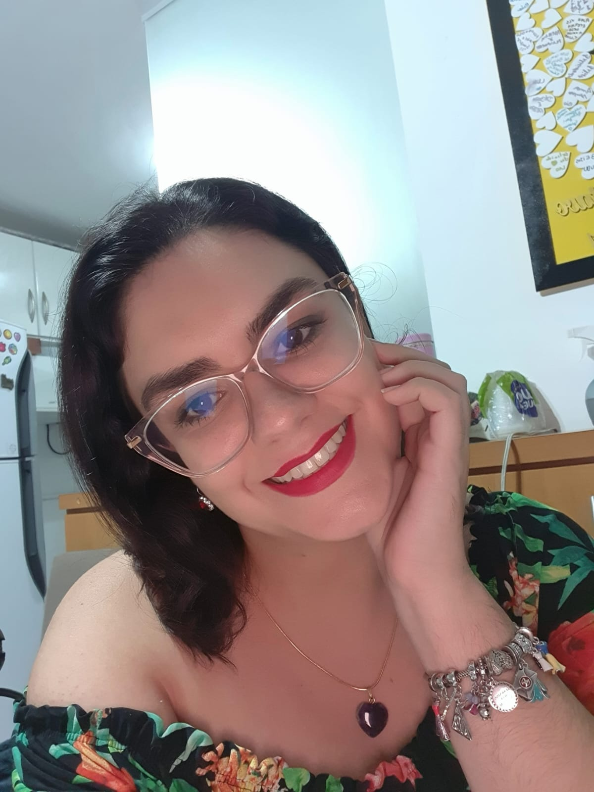

Quem é a Cynthia?

- Apaixonada por muitas coisas: livros, músicas, dorama, animais e por crianças. Sempre foi óbvio para mim que nasci para ser mãe.
- Com 13 anos, lendo Brumas de Avalon, me apaixonei pela história do Rei Arthur, e a partir desse momento defini que, se eu tivesse um filho menino, ele chamaria Arthur!
- Casei com 30 anos, em 2021, e meu marido também queria ser pai. Após cerca de 2 anos após o casamento, recebemos nosso positivo, em Julho/2023.
Essa é minha história
- Estava de 6 semanas aproximadamente. No dia seguinte de contarmos para nossos pais sobre a gravidez, começou meu sangramento.
- Com o desespero de poder estar perdendo meu bebê que apesar do pouquíssimo tempo que sabia de fato dele (pois já suspeitava que estava grávida fazia 1 semana) já amava muito, fui para o primeiro hospital que conhecia, e lá não tinha maternidade.
- Sei que o despreparo do atendimento não foi o que causou o aborto, mas me senti totalmente negligenciada. Os médicos não souberam analisar o ultrassom e, sem cuidado nenhum, falaram que minha gravidez não tinha evoluído. No retorno com a médica do PS, ela me diz que a gravidez estava indo bem, para eu não ficar preocupada.
- Por conta dessa real bagunça, saímos daquele hospital e fomos para uma maternidade, onde o atendimento foi totalmente diferente. Lá verificaram que eu ainda estava grávida e me mandaram repousar por 1 semana.
- Depois dessa 1 semana, voltamos à maternidade e, apesar do embrião ter crescido, o saco gestacional havia desprendido do endométrio e então deram a notícia do aborto retido.
- Tive complicações, uma anemia por conta do sangramento intenso e quando fui para a maternidade confirmar que já havia expelido o embrião, ele ainda estava no mesmo lugar. Após me darem um remédio para ajudar a expelir, o aborto foi finalizado.
- Pensando em tudo que passei, idealizei esse site com todo carinho do mundo, pensando no quanto teria sido bom saber mais sobre casos anteriores, informações de para onde ir e o que fazer em casos de emergência. Espero que dessa forma, o aborto não seja mais um tabu e, que as mães que nunca tiveram seus filhos em seus braços possam ser ouvidas e que respeitem seu luto.

Você Sabia?
Futuras mamães:
É muito difícil na hora que um sangramento aparece pararmos para pensar onde devemos ir. Sempre saiba onde tem uma maternidade próxima de você para essas emergências!